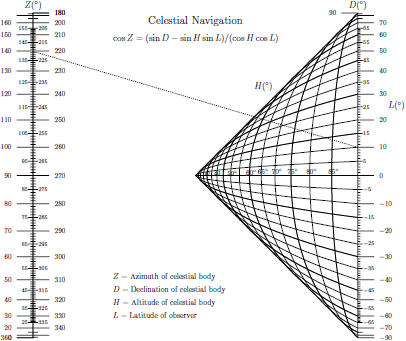

Exploring what sort of computing can be done on paper.
Work in progress, come back later.
- Binary operations
- Postfix notation
- Punchcard memory
- 8Bit Computing
- Vedic Mathematics
- Smith charts & graphical computing
- L'abaque, ou compteur universel, de Lalanne
- Bâtonnets de Neper et réglettes multiplicatrices
Nomograms
A nomogram is a graphical calculating device, a two-dimensional diagram designed to allow the approximate graphical computation of a function. The field of nomography was invented in 1884 by the French engineer Philbert Maurice d’Ocagne (1862-1938) and used extensively for many years to provide engineers with fast graphical calculations of complicated formulas to a practical precision. Each variable is marked along a scale, and a line drawn through known scale values (or a straightedge placed across them) will cross the value of the unknown variable on its scale.
Nomograms serve a dual purpose: they allow nitty-gritty fast computation—answers in the form of unambiguous numbers—and at the same time provide tremendous insight through the relationship of the various scales, their labeling, limits, and gradations. The better nomograms are self-documenting. They provide a visual model of a system and manifest a wonderful ability to imply interrelationships and cross-variable sensitivities. As the mathematician and computer scientist Richard Hamming remarked, "The purpose of computing is insight, not numbers."
Last update on 20W10, edited 2 times. +4/12fh-----+